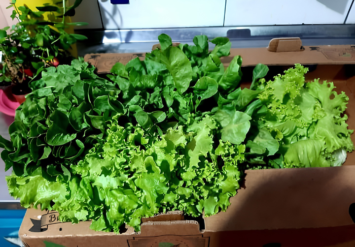
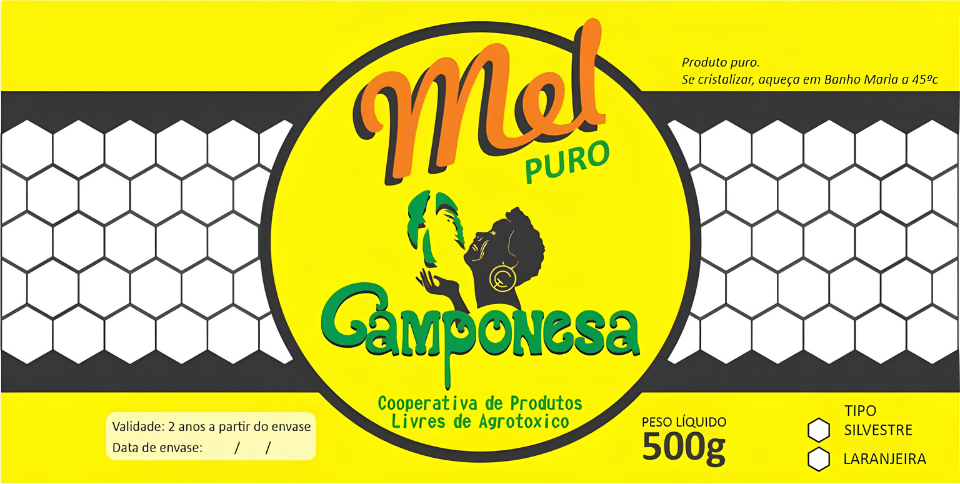
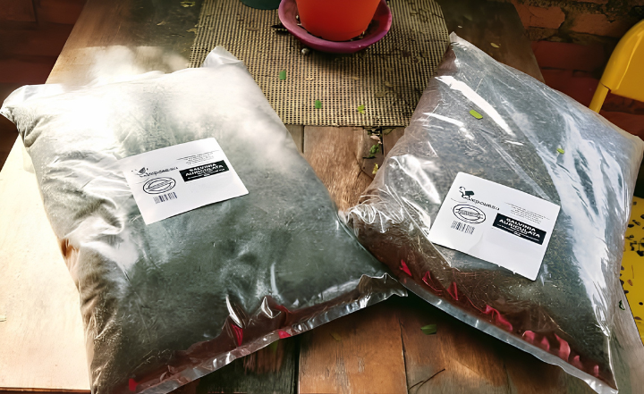

Nossos Produtos
Alimentos que a natureza
assina. Que o campo cultiva.

Hortifruti Orgânico
Folhas, legumes e raízes cultivados sem agrotóxicos, colhidos no ponto
certo.

Mel Artesanal
Puro mel de abelhas nativas, sem conservantes. Cada pote carrega uma
história.

Adubo Orgânico
Produzido a partir de compostos naturais como esterco, restos vegetais e
húmus.

Produto em Gerais
Da horta para a sua casa. Ervas secas, temperos artesanais e blends que
cuidam do corpo.

Palmito Pupunha
Palmito fresco do Vale do Ribeira, cultivado sem agrotóxicos. Sabor
autêntico direto da floresta para a sua mesa.